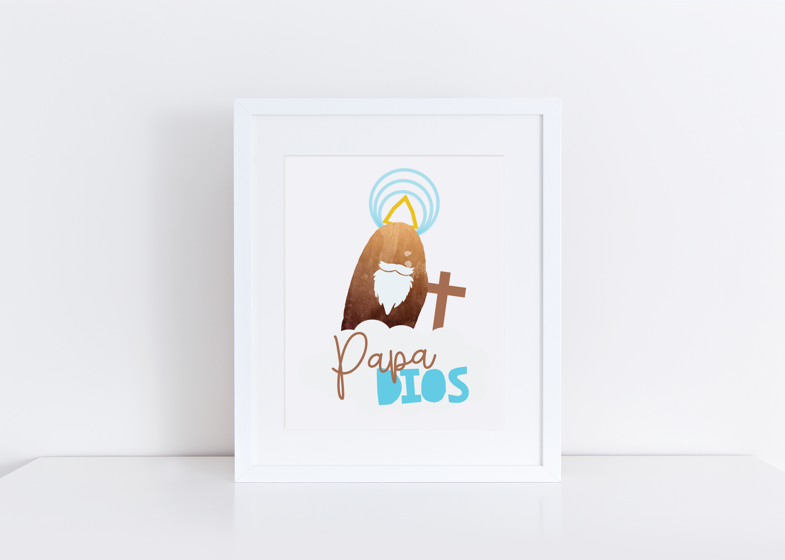
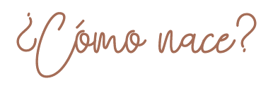

Papa Dios nace a través de un proyecto Final para Introducción al Web de una estudiante de Primer Año de Chavon La Escuela de Diseño. El objetivo era realizar una página web de un objeto asignado, a ella le tocó una Papa. Luego de días de pensar que hacer con ella y hacer pruebas con fotos, recetas y materiales, orando con sus hijas, se le ocurrió Papa Dios.
Fundada por una familia Católica de 4 y muy felices de poder llevar a Jesús a través de sus diseños y artículos.
-Allam, Heidie, Allie & Sarah
Familia De Moya Santana